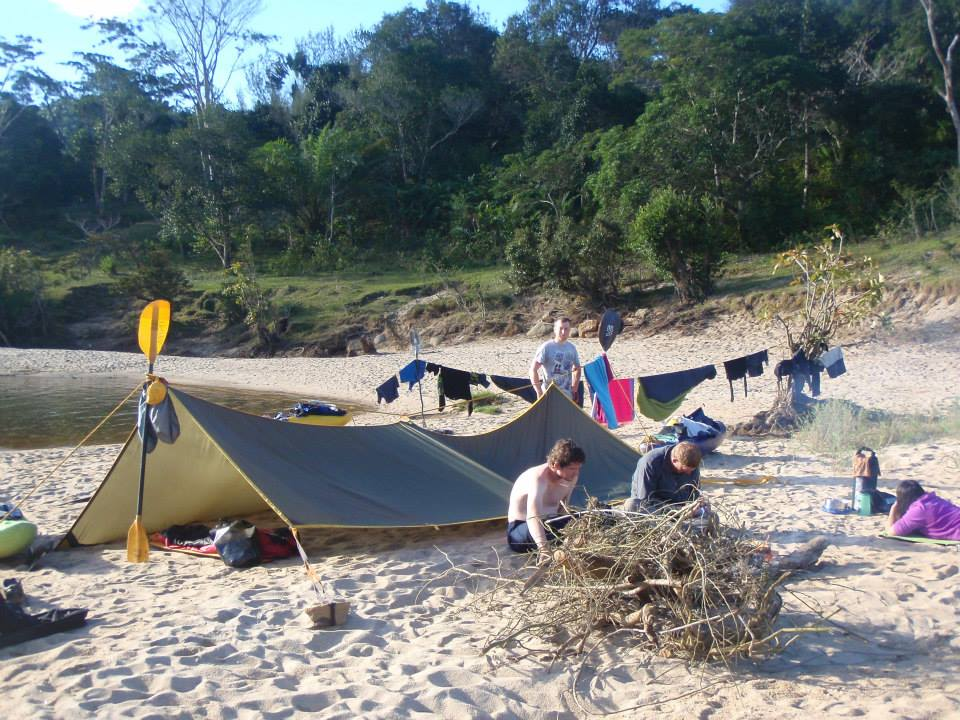
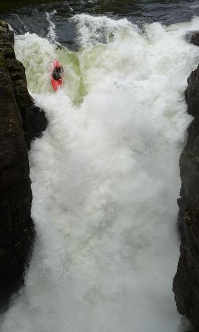

In my professional life I work as an analyst programmer at British Gas. With my main focus on system and process improvements I work across a range of technologies. I'm responsible for the print gateway, a series of processes that verify our outbound correspondence, reformat the data and send it to our third party print centres. Over the last year I have been redesigning our end to end processes making them more reliable, transparent and easy to use and support.
I enjoy problem solving and finding creative and innovative solutions to difficult problems. I'm fortunate that my work involves a range of roles and includes working on the high level designs and architecture of our correspondence processes to developing specific solutions. I'm the lead developer on the verifier responsible for both the day to day operations, which is mainly carried out by an offshore team in India, and the project work which is mainly completed onshore. Most of my technical work is done using Unix and Linux, especially scripting in python, writing web applications using HTML, CSS, JavaScript and maintaining our core processes with BASH and AWK. My most recent achievement has been designing and building a web front end allowing non-technical users to run queries and even process print files through our tools which empowered end users, saved time and reduced complexity.
I keep up with the latest developments in the industry and am always keen to evaluate new technologies and introduce new tools and techniques where appropriate. My motivation for creating this website was to get more experience with certain web technologies to be used at work. I evaluated and introduced MongoDB to the company to reform the way we handle our correspondence meta-data and MI. Within a couple of months I deployed a production implementation which has allowed us to create dynamic search tools for the business users. While working at Centrica Energy I worked on our enterprise social media strategy, evaluated different platforms and was part of the Yammer implementation. I wrote the Windows Azure business case after meeting with developers and gathering their requirements for a more agile development infrastructure.
Outside of work I am an outdoor enthusiast. My real passion is white water kayaking which has taken me around the world. In 2013 I was part of the second ever British Kayaking expedition to Madagascar where a team of seven of us kayaked through the jungles. We claimed the first descent of the Sandrananta. You can read more about my adventures on my blog. I also enjoy mountain biking and climbing. In my personal life I also enjoy new things and try to learn a new skill every year which has led to a long list of skills (some of which are quite unusual) including swinging fire poi, power kiting, playing the ukulele, fishing and playing squash amongst others. I am a fluent Welsh and English speaker and can speak some Spanish at a beginner level.